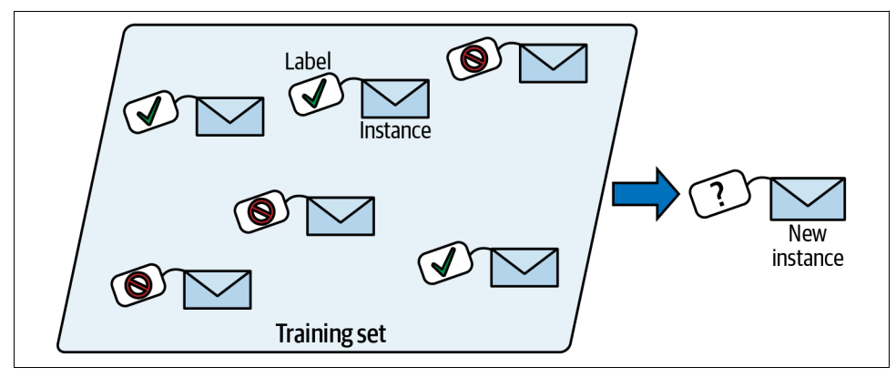
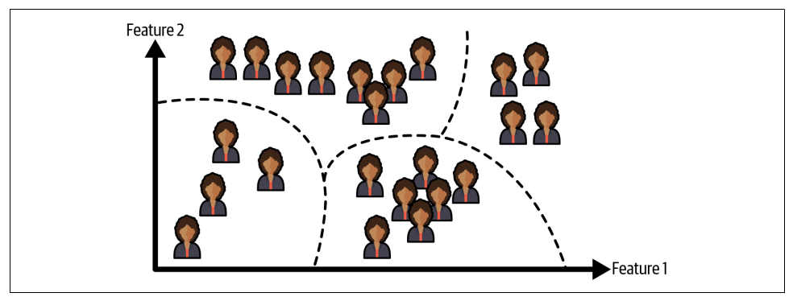
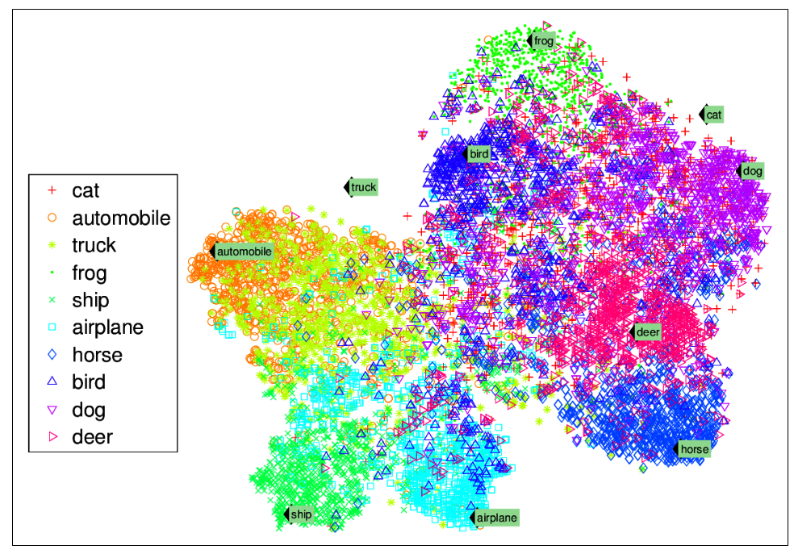
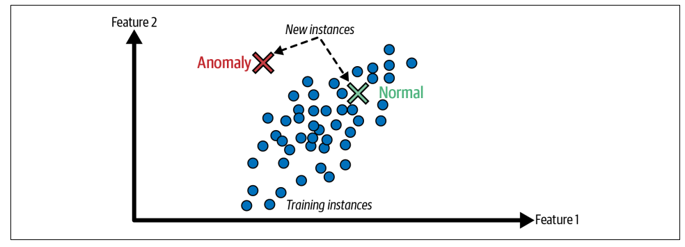
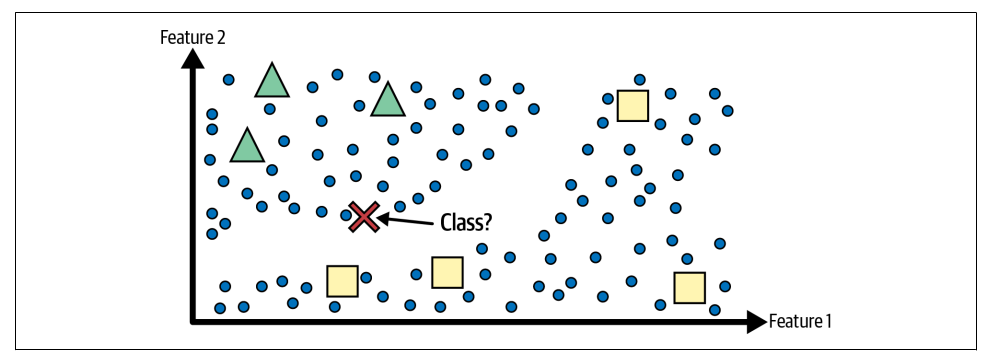
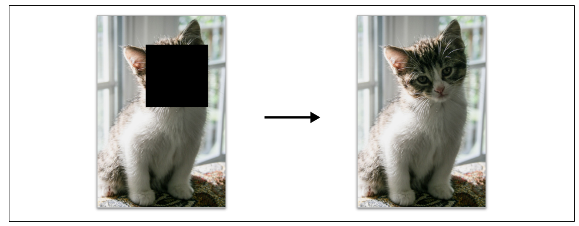
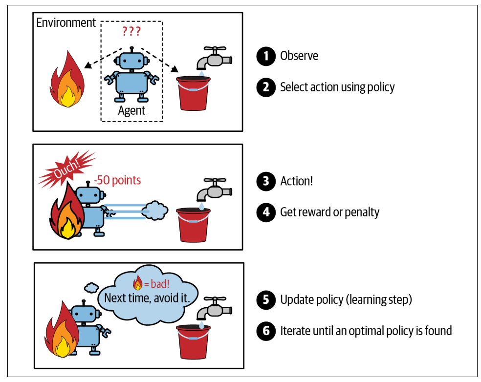

Supervised Learning · یادگیری نظارتشده
یادگیری از مثالهایی که جواب درست آنها را میدانیم

Géron, Hands-On ML (2025), Fig. 1-5
برای هر ایمیل، جواب درست داریم:
Spam یا Not Spam
Input + Correct Answer → Model
Classification · دستهبندی
خروجی یک کلاس است، نه یک عدد
مثال اسپم:
Email → [Model] → Spam یا Not Spam
- تعداد محدودی کلاس برای خروجی
- تشخیص بیماری: سالم / بیمار
- تشخیص تصویر: گربه / سگ / پرنده
Unsupervised Learning · یادگیری بدون نظارت
بدون label هم میتوان یاد گرفت

Géron, Hands-On ML (2025), Fig. 1-7
مشتریان فروشگاه را داریم.
هیچ برچسبی نداریم.
اما میتوانیم گروههای مشابه را پیدا کنیم.
الگوریتم خودش ساختار پنهان داده را کشف میکند.
Visualization · تجسم داده
وقتی دادهها ابعاد بسیار زیادی دارند

Géron, Hands-On ML (2025), Fig. 1-8
ما نمیتوانیم دادههای چندبُعدی را ببینیم.
ابزارهایی مثل t-SNE کمک میکنند دادهها را به شکلی نمایش دهیم که الگوها و خوشهها قابل مشاهده باشند.
این یک الگوریتم پیشبینی نیست؛ یک ابزار بصری است.
Anomaly Detection · تشخیص ناهنجاری
وقتی یک رفتار خیلی متفاوت است

Géron, Hands-On ML (2025), Fig. 1-9
رفتار معمول را یاد میگیریم، سپس:
- تقلب بانکی
- نفوذ امنیتی
- خرابی سنسور
هر چیزی که از الگوی معمول فاصله داشته باشد → ناهنجاری
Semi-Supervised Learning · یادگیری نیمهنظارتشده
داده زیاد داریم، Label کم داریم

Géron, Hands-On ML (2025), Fig. 1-10
مثال واقعی:
۱۰۰ هزار عکس
فقط ۵۰۰ عکس برچسب خورده
Small Labeled Data
+ Large Unlabeled Data
───────────────────
Semi-Supervised Learning
Self-Supervised Learning · یادگیری خودنظارتشده
مدل خودش Label تولید میکند

Géron, Hands-On ML (2025), Fig. 1-11
چطور ChatGPT روی میلیاردها متن آموزش دید؟
کسی Label ننوشته.
I love machine _____
← Predict next word
خود داده، Label است.
Reinforcement Learning · یادگیری تقویتی
مدل از پاداش یاد میگیرد، نه از label

Géron, Hands-On ML (2025), Fig. 1-12
Action → Environment → Reward → Learn
- بازی شطرنج
- بازی Atari
- کنترل ربات
جواب درست از قبل نداریم.
مدل از پاداش یاد میگیرد.